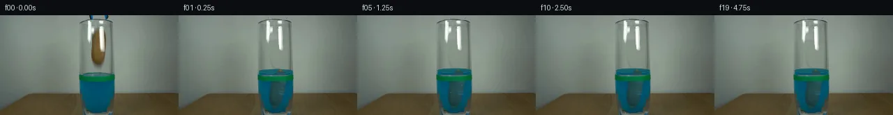

![首帧]()

Round 00
2026-11-05T16:02:52.302311+00:00像素候选变化代码 +350/−0inspection 更新
pixels de85300bb7be219d · code ca17cf720d7d73d8
查看本轮 generate.py 真实 diff
--- previous/generate.py
+++ current/generate.py
@@ -0,0 +1,350 @@
+"""Local source-pixel compositing for a potato released into dyed water.
+No model, renderer, video engine, network or additional scene input is used.
+"""
+from pathlib import Path
+import json
+import math
+import numpy as np
+from PIL import Image, ImageDraw
+from scipy.ndimage import gaussian_filter, map_coordinates, maximum_filter
+from artifact_io import save
+
+ROOT = Path(__file__).resolve().parent
+SOURCE = np.asarray(Image.open(ROOT / 'first_frame.png').convert('RGB'))
+H, W = SOURCE.shape[:2]
+Y, X = np.mgrid[:H, :W].astype(float)
+SRC = SOURCE.astype(float)
+
+
+def smoothstep(a, b, value):
+ q = np.clip((value - a) / (b - a), 0, 1)
+ return q * q * (3 - 2 * q)
+
+
+def composite(canvas, color, alpha):
+ alpha = np.clip(alpha, 0, 1)[..., None]
+ return canvas * (1 - alpha) + np.asarray(color) * alpha
+
+
+# Measured irregular potato silhouette, with a soft photographic edge.
+outline_y = np.array([16, 18, 20, 24, 28, 36, 44, 52, 58, 64, 68, 71, 74, 76])
+outline_l = np.array([140, 138, 136, 134, 132.5, 131.4, 131.1, 131.0, 131.7, 133.2, 135.0, 137.0, 140.5, 141.0])
+outline_r = np.array([140, 143, 146, 148.3, 149.7, 150.3, 150.2, 150.1, 149.3, 148.5, 146.9, 145.3, 142.0, 141.0])
+left = np.interp(Y, outline_y, outline_l)
+right = np.interp(Y, outline_y, outline_r)
+shape = np.minimum(X - left, right - X)
+potato_alpha = smoothstep(-0.65, 0.65, shape)
+potato_alpha *= smoothstep(16, 18, Y) * (1 - smoothstep(73.5, 75.0, Y))
+
+# Reconstruct the wall as transmitted through the empty central glass, using
+# unaffected samples on either side of the potato on the same source rows.
+background = SRC.copy()
+for y in range(13, 82):
+ lc = np.median(SRC[y, 123:127], axis=0)
+ rc = np.median(SRC[y, 152:157], axis=0)
+ for x in range(129, 154):
+ u = np.clip((x - 124) / 30, 0, 1)
+ color = lc * (1 - u) + rc * u
+ color += np.array([3.0, 3.4, 3.2]) * math.sin(math.pi * u)
+ background[y, x] = color
+
+# Separate stationary glass glare from the brown object. Optical white glare
+# stays fixed, including when the potato passes behind it.
+glare_alpha = np.zeros((H, W), float)
+glare_rgb = np.broadcast_to(np.array([252.0, 255.0, 250.0]), SRC.shape).copy()
+for y in range(8, 54):
+ for x in range(130, 151):
+ if (x <= 134 and y <= 28) or x >= 142:
+ col = SRC[y, x]
+ base = background[y, x]
+ neutral = smoothstep(137, 183, min(col))
+ a = np.clip(np.mean((col - base) / np.maximum(glare_rgb[y, x] - base, 1)), 0, .99)
+ glare_alpha[y, x] = a * neutral
+# Remove silhouette, soft edge, and the small old shadow below the potato.
+removal = gaussian_filter(maximum_filter(potato_alpha, size=5), .6)
+shadow = np.exp(-((X - 141) / 6.2)**2 - ((Y - 73.5) / 5.0)**2) * .9
+removal = np.maximum(removal, shadow)
+removal *= (X > 129) & (X < 154) & (Y > 13) & (Y < 82)
+plate = composite(SRC, background, removal)
+# This zone reconstructs the glare's underlying source so the final glare can
+# be applied once after all moving objects.
+plate = composite(plate, background, glare_alpha)
+
+# Withdraw the tiny visible blue-black grabber tips above the frame.
+tool_mask = np.zeros((H, W), float)
+for y in range(0, 7):
+ for x in list(range(126, 135)) + list(range(148, 156)):
+ r, g, b = SRC[y, x]
+ if b > r + 18 or max(r, g, b) < 100:
+ tool_mask[y, x] = 1
+# Sample nearby wall, excluding the unchanged glass rim.
+tool_background = SRC.copy()
+for y in range(7):
+ for x in range(126, 157):
+ u = (x - 125) / 33
+ tool_background[y, x] = SRC[y, 125] * (1-u) + SRC[y, 158] * u
+plate = composite(plate, tool_background, tool_mask)
+
… diff truncated; 263 more lines …